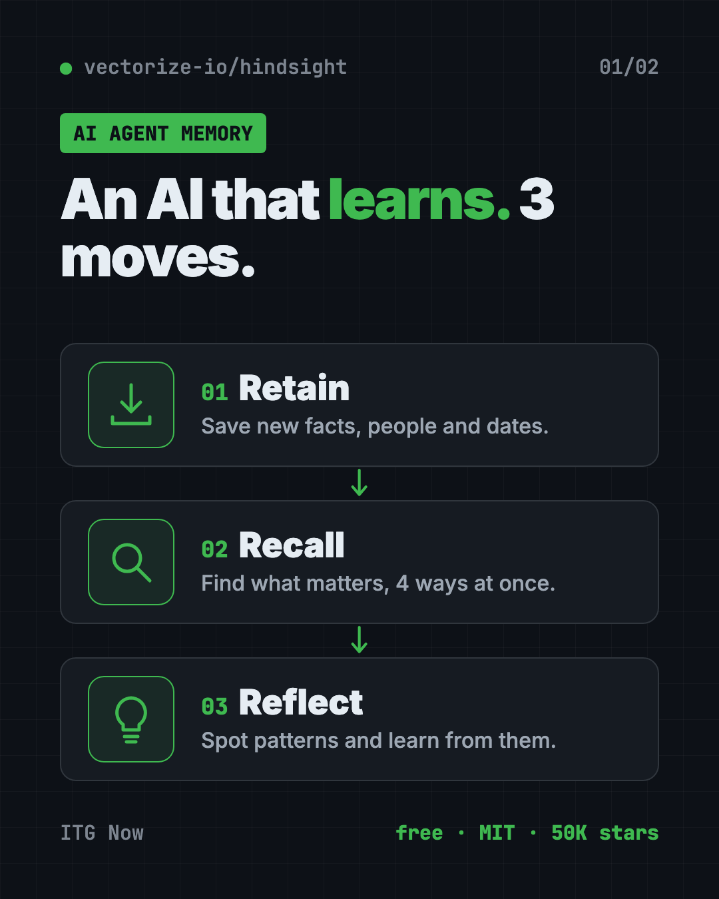
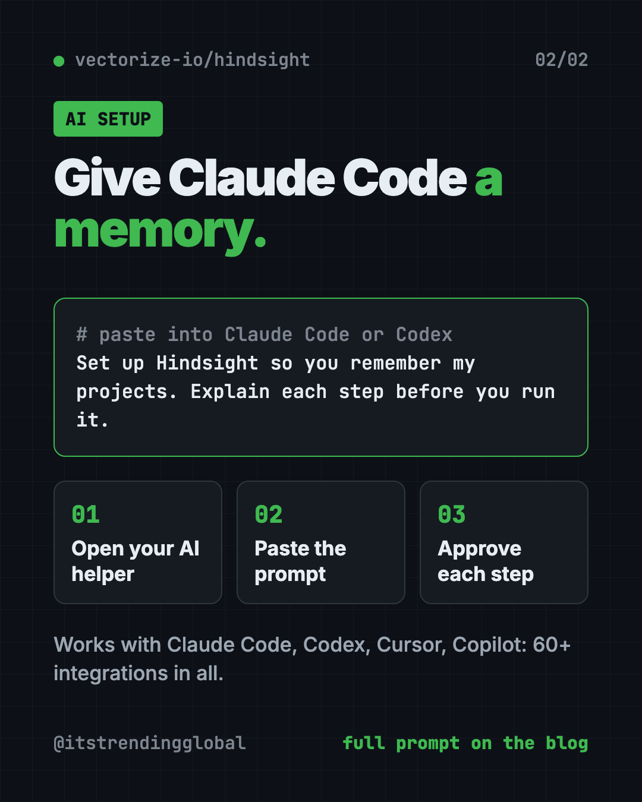

Hindsight: Free AI Agent Memory That Learns (2026 Guide)
- Published 15 Oct 2026
- Updated 16 Oct 2026
- 8 min read
- License MIT
- By the ITG Now team
Hindsight is a free, open-source AI agent memory system. It lets an AI helper remember what happened in past chats and learn from it, so it stops starting from zero every time.
You tell a chatbot your name, your job and your plans. Tomorrow, it has forgotten all of it. Hindsight is built to fix that for the AI tools you, or your team, build and use.
Key takeaways
- Free and open source under the MIT license. You can run it on your own computer or server.
- Learns, not just remembers. Its makers say most memory tools only recall chat history. Hindsight forms beliefs and "mental models" from many memories.
- Three simple actions: retain (save), recall (find) and reflect (think it over).
- Plugs into 60+ tools, including Claude Code, Codex, Cursor, ChatGPT, n8n and Zapier.
- Popular: about 50K GitHub stars. The README says Fortune 500 companies use it in production.
What is Hindsight?
Hindsight is memory for AI agents. An agent is an AI helper that does tasks for you, like answering support emails or writing code.
The README (the project's main instructions page) calls it "an agent memory system built to create smarter agents that learn over time." It is made by Vectorize, a company that also sells a hosted version.
Normal AI chats forget everything when the chat ends. Hindsight sits next to your AI and keeps a long-term memory for it. Before the AI answers, Hindsight hands it the useful bits from the past. After the chat, it saves what was new.
How does Hindsight work?
It does three things, and each has a plain name:
- Retain. Save something new. For example, "Alice got promoted to senior engineer." Hindsight uses an AI model to pull out the key facts, people, dates and links.
- Recall. Find memories that matter for a question, like "What does Alice do?" It searches four ways at once: by meaning, by exact words, by connections between people and things, and by time.
- Reflect. Think deeper over many memories. For example, a sales agent can reflect on why some emails got replies and others didn't.
Memories live in "banks," which are like separate notebooks. You might keep one bank per customer or one per project.

Hindsight also sorts memories the way people do. "World facts" are things that are true ("the stove gets hot"). "Experiences" are what the agent itself went through ("I touched the stove and it hurt"). From many of these, it builds "observations," which are beliefs backed by evidence.
How to use Hindsight (real examples)
These come straight from the use cases the README describes:
- Give your coding helper a project memory. One package gives Claude Code, Codex and others a memory of your project, built from its history and past sessions.
- A support bot that knows the customer. It remembers last week's problem, so the customer doesn't explain it twice.
- A sales helper that learns. It reflects on which outreach messages got answers and which ones didn't.
- A project manager agent. It reflects on what risks a project faces, based on everything it has seen.
- Spot gaps in your help docs. A support agent can notice questions your current docs don't answer.
💡 Tip: Not a coder? The easiest win is giving Claude Code or Codex a memory with the coding agents package below. You don't need to write any code.
Is Hindsight free?
Yes. The code is free and open source under the MIT license. You can run it yourself at no cost.
Two costs to know about:
- An AI model. Hindsight uses an AI model to read and sort memories. That can be a paid API key, a free local model through Ollama or LM Studio, or a plan you already pay for. The README says ChatGPT Plus/Pro, Claude Pro/Max, Cursor and GitHub Copilot subscriptions work with no API key.
- Hindsight Cloud (optional). Vectorize sells a hosted version. The README says billing is usage-based "with free credits to start" and no fixed monthly fee.
Does Hindsight really work better?
The README says Hindsight reached top scores on LongMemEval, a common test for AI memory. It also says those results were independently reproduced by researchers at Virginia Tech and The Washington Post. Other tools' scores on its chart are self-reported by their makers.
Live, updated results are on the project's benchmark page. We have not run our own tests.
How to install Hindsight
There are a few ways. Pick the one that matches what you want.
Give Claude Code or Codex a memory
This is the coding agents package. It works with Claude Code, Codex CLI, Cursor CLI, GitHub Copilot CLI, opencode and more. Open Terminal and copy and paste this:
npx @vectorize-io/hindsight-coding-agents install all
That sets up every coding helper it finds. To set up only Claude Code, copy and paste this instead:
npx @vectorize-io/hindsight-coding-agents install claude-code
You need Node.js (a free tool that runs JavaScript programs) for npx to work. The coding agents guide on the Hindsight website explains how it connects to a memory server.
Run your own Hindsight server with Docker
Docker is a free app that runs software in a sealed box. The README recommends this way. Swap sk-xxx for your own OpenAI key, then copy and paste this:
export OPENAI_API_KEY=sk-xxx
docker run -it --pull always --name hindsight --restart unless-stopped -p 8888:8888 -p 9999:9999 \
-e HINDSIGHT_API_LLM_API_KEY=$OPENAI_API_KEY \
-v hindsight-data:/home/hindsight/.pg0 \
ghcr.io/vectorize-io/hindsight:latest
Then open http://localhost:9999 in your browser to see the Hindsight screen. The API (the address your apps talk to) is at http://localhost:8888.
Prefer another AI company, or a free local model? The README says it works with 25+ providers, including Anthropic, Gemini and Ollama.
Run it with Python, no Docker
Copy and paste this:
pip install hindsight-api
export HINDSIGHT_API_LLM_API_KEY=sk-xxx
hindsight-api
⚠️ Heads up: On Intel Macs, the README says to use the
hindsight-all-slimpackage for the no-server Python option. Apple Silicon Macs, Linux and Windows are fully supported.
Let Claude or Codex set it up for you
Claude Code and OpenAI Codex are AI helpers that can run setup steps on your computer. You paste a request, it explains each step, and you approve it.
Copy and paste this:
Please set up Hindsight (github.com/vectorize-io/hindsight) so you have long-term memory of my projects.
1. Read the Hindsight README and the coding agents integration guide.
2. Check if I have Node.js and Docker installed.
3. Install the Hindsight coding agents package for this AI helper.
4. Tell me what each step does and where my memories will be stored before you run it.
Then try asking:
What do you remember about this project from our past sessions?
Start a local Hindsight server with Docker and use Ollama so nothing leaves my computer.
Show me how to add Hindsight memory to my customer support chatbot in plain steps.

Hindsight at a glance
| Price | Free to self-host; optional paid Hindsight Cloud |
| Works offline | Yes, if you pair it with a local model like Ollama |
| Platforms | Linux, Mac, Windows (Docker or Python) |
| License | MIT (open source) |
| Integrations | 60+, including Claude Code, Codex, Cursor, n8n, Zapier |
| GitHub stars | About 50K |
| Best for | Teams building AI helpers, and power users of AI coding tools |
Who should use Hindsight?
- People who use Claude Code or Codex every day and are tired of re-explaining their project.
- Small businesses building a support or sales chatbot that should know returning customers.
- No-code builders using n8n, Zapier, Dify or Flowise.
- Developers building AI agents with LangChain, CrewAI or the OpenAI Agents SDK.
If you just chat with ChatGPT now and then, you probably don't need it.
Our take
Hindsight is one of the most serious free tools for AI agent memory right now. The "reflect" idea, where the AI learns patterns instead of just looking things up, sets it apart.
What we like:
- MIT license, free to self-host.
- Works with the AI subscriptions many people already pay for.
- A one-line install for coding helpers.
- Benchmark results reproduced by outside researchers.
- Huge list of ready integrations.
What to watch for:
- Running your own server needs Docker or Python. Not one-click.
- It still uses an AI model to sort memories, which can cost money.
- Your memories are stored wherever you run it, so think about privacy.
- The cloud version is paid after the free credits.
Comparing memory tools? Read our guide to MemPalace, a private memory for your AI, and Hermes Agent, a free assistant that learns and remembers. Hindsight also made our top repos for the week of September 21.
FAQ
What is AI agent memory?
It is a long-term memory for an AI helper. It saves what happened in past chats and hands the useful parts back to the AI next time.
Is Hindsight free?
Yes. Hindsight is open source under the MIT license and free to run yourself. Hindsight Cloud, the hosted version, is paid after free starting credits.
Can I give Claude Code a memory with Hindsight?
Yes. The README offers a package that wires Hindsight into Claude Code, Codex, Cursor and other coding helpers with one npx command.
Do I need an OpenAI key to use Hindsight?
No. The README lists 25+ providers, including free local models through Ollama. It also says some existing subscriptions, like Claude Pro or ChatGPT Plus, work without an API key.
Where are my Hindsight memories stored?
If you run it yourself, they stay in a database on your own machine or server. With Hindsight Cloud, they are stored by Vectorize.
Does Hindsight work on Windows?
Yes. The README lists Windows as supported with Docker, with a regular Python install, and with the built-in database.
Get Hindsight: github.com/vectorize-io/hindsight
Keep reading

DBX: Free Database Client for 100+ Databases, With AI
DBX is a free database client that opens 100+ kinds of databases in a 25 MB app. Its AI helper turns plain English into database queries for you.

PureMac: Free CleanMyMac Alternative, No Subscription
PureMac is a free CleanMyMac alternative. It clears junk, fully uninstalls apps and finds duplicates, with no subscription, no tracking and no scare tactics.

Strata: Run Big Local AI on a Gaming PC, Free
Strata is a free installer that runs big, private local AI on a gaming PC. It sets up a large Qwen model, so your chats never leave your computer.